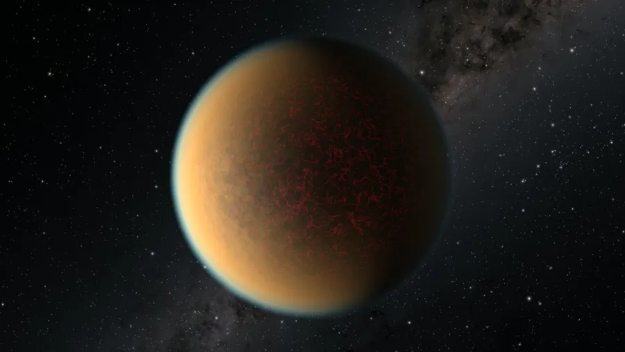

11. März 2021
GJ 1132 b: zweite Atmosphäre aus Vulkangasen? Ein umstrittener Befund
Ein Team meldete anhand von Hubble-Daten Hinweise auf eine neu gebildete Atmosphäre beim Gesteinsplaneten GJ 1132 b. Sie sollte Wasserstoff, Blausäure, Methan und Ammoniak enthalten und durch Vulkanismus aus dem Planeteninneren nachgeliefert werden, nachdem der Planet seine ursprüngliche Gashülle verloren hatte.
Eine zweite Auswertung von fünf mit Hubble beobachteten Transits fand dagegen ein Spektrum ohne erkennbare Merkmale. Demnach hat GJ 1132 b entweder eine Atmosphäre aus schweren Molekülen, eine hoch liegende Dunstschicht oder praktisch keine Atmosphäre. Der Planet hat 1,7 Erdmassen und 1,1 Erdradien.
Quellen: ESA/Hubble: "Hubble Sees New Atmosphere Forming on a Rocky Exoplanet." (heic2104), 11.03.2021; arXiv: Libby-Roberts et al., "The Featureless HST/WFC3 Transmission Spectrum of the Rocky Exoplanet GJ 1132b: No Evidence For A Cloud-Free Primordial Atmosphere and Constraints on Starspot Contamination.", 21.05.2021